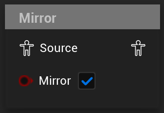

Mirror
Mirrors a pose
UAnimGraphNode_Mirror
FAnimNode_Mirror

Mirrors the input pose based on the data asset configured in the nodes’ details panel.
The node also provides options to blend between the poses when the Mirror input changes and to reset the input when this happens.
The blend is an inertialization blend, meaning that the graph needs to evaluate a node that processes inertialization after the mirror node requests like the Inertialization or Dead Blending nodes. If this is not the case, the pose will not blend.
The Mirror node also has settings for what parts of the incoming pose should be mirrored: Bones, Curves and Attributes. Each of these can be toggled on or off individually, but not exposed to the AnimGraph or bound to a variable, and as such cannot be changed at runtime.
Mirroring additives is currently not supported as of UE5.3.
If the output of the node is expected to be an additive pose(e.g. it is being used as an input for an Apply Additive node, it will throw a warning and just output the additive identity pose as long as it is set to mirror the input.